Türkçe (TR)
English (EN)
ქართული (KA)
Русский (RU)
აღმოაჩინეთ შავი ზღვის მარგალიტის - ბათუმის ისტორიული და ტურისტული სიმდიდრე.
ბათუმი საქართველოში აჭარის ავტონომიური რესპუბლიკის დედაქალაქია და შავი ზღვის სანაპიროზე ერთ-ერთი ყველაზე პოპულარული ტურისტული ცენტრია. ძველი ქალაქის ისტორიული ტექსტურა ერწყმის თანამედროვე ცათამბჯენებსა და ფართო პარკებს, რაც ქმნის უნიკალურ ატმოსფეროს.
ისიამოვნეთ ბათუმის გულში ყოფნით, მრავალი ტურისტული ადგილი ჩვენი სასტუმროდან ფეხით სავალ მანძილზეა.


შეყვარებულთა სიმბოლო, რომლებიც ვერ ხვდებიან ერთმანეთს. ეს ფოლადის ქანდაკება ყოველ საღამოს განათებულია და საოცარ სანახაობას ქმნის.

მსოფლიოში ერთ-ერთი უდიდესი და მდიდარი ბოტანიკური ბაღი, სადაც ათასობით მცენარის სახეობაა წარმოდგენილი.

იტალიური სტილის არქიტექტურით, მოზაიკითა და ცოცხალი მუსიკით, ეს არის ბათუმის ერთ-ერთი ყველაზე სასიამოვნო შეხვედრის ადგილი.
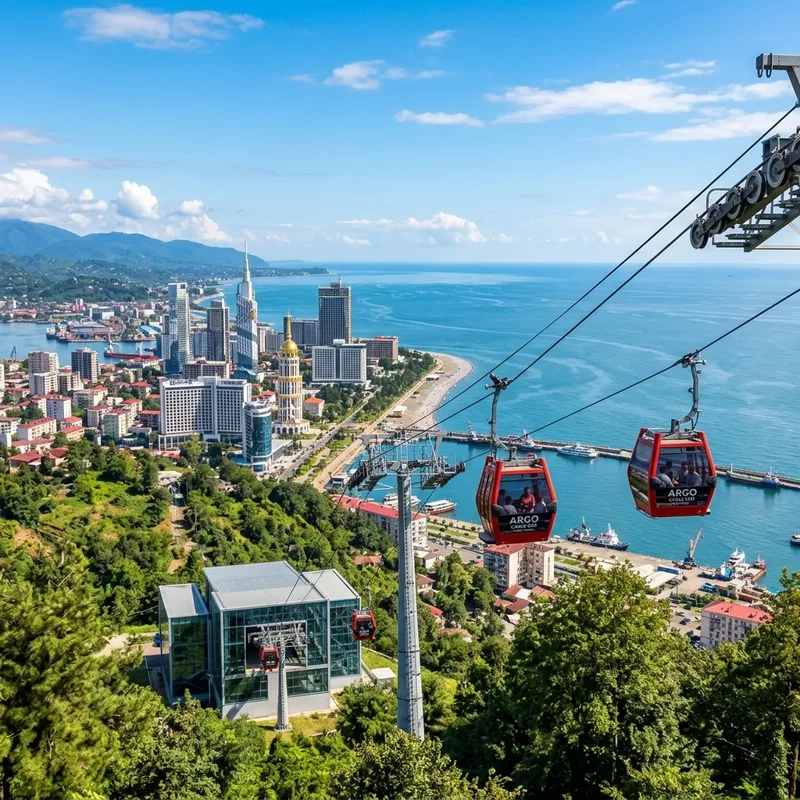
ბათუმის ჩიტის ხედიდან დასანახად საუკეთესო გზა, ეს საბაგირო გზა გთავაზობთ უნიკალურ მოგზაურობას ქალაქიდან ანურიის მთაზე.
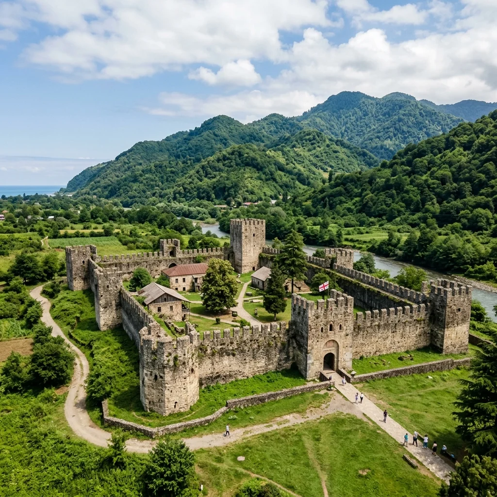
რომაული პერიოდის ეს უძველესი ციხე ბათუმის სამხხრეთით მდებარე ერთ-ერთი ყველაზე მნიშვნელოვანი ისტორიული ნაგებობაა.
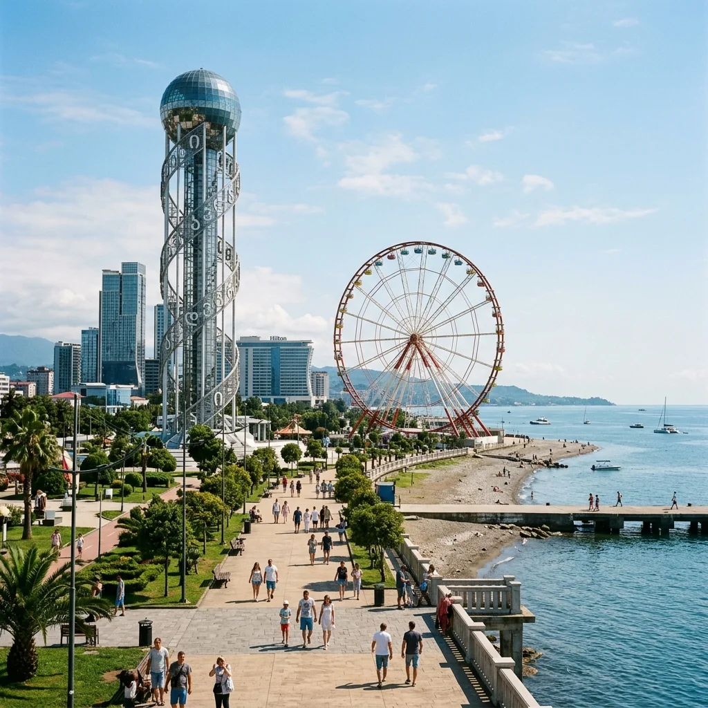
ანბანის კოშკისა და ეშმაკის ბორბლის სახლი, ეს პარკი პოპულარული დასასვენებელი ადგილია, რომელიც თანამედროვე ბათუმის გულად ითვლება.
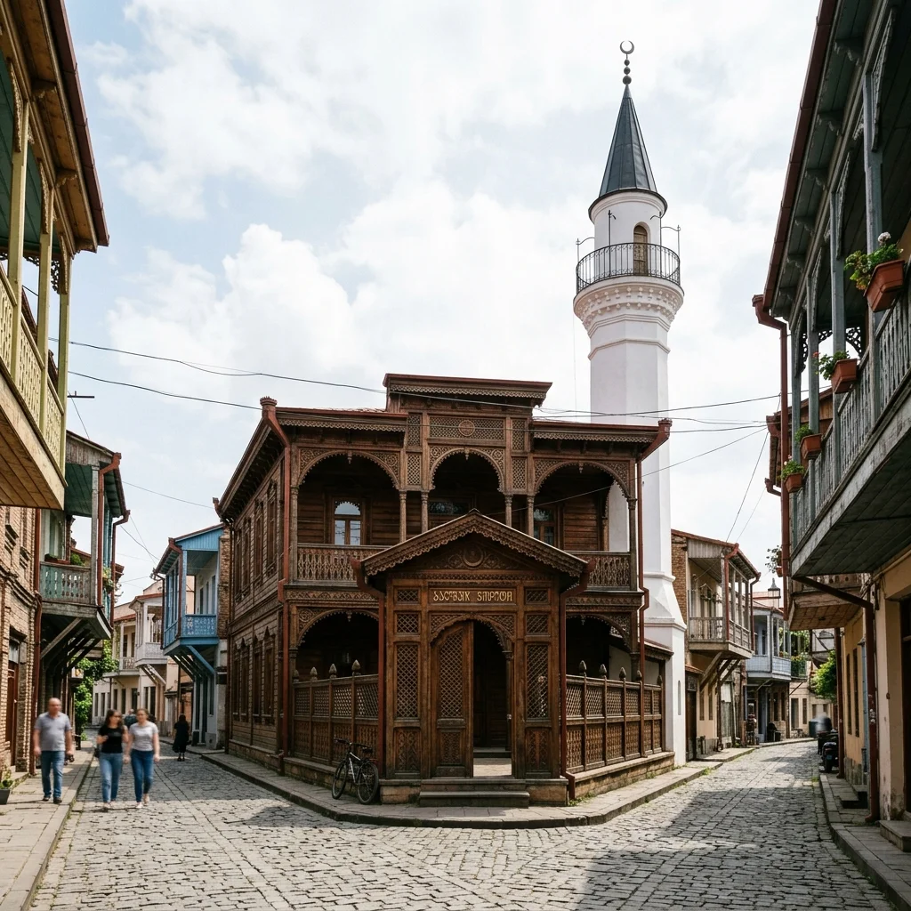
1880-იან წლებში აშენებული ეს მეჩეთი ასახავს ქალაქის კულტურულ მრავალფეროვნებას თავისი ხის დეკორაციებითა და ფერადი ინტერიერის არქიტექტურით.
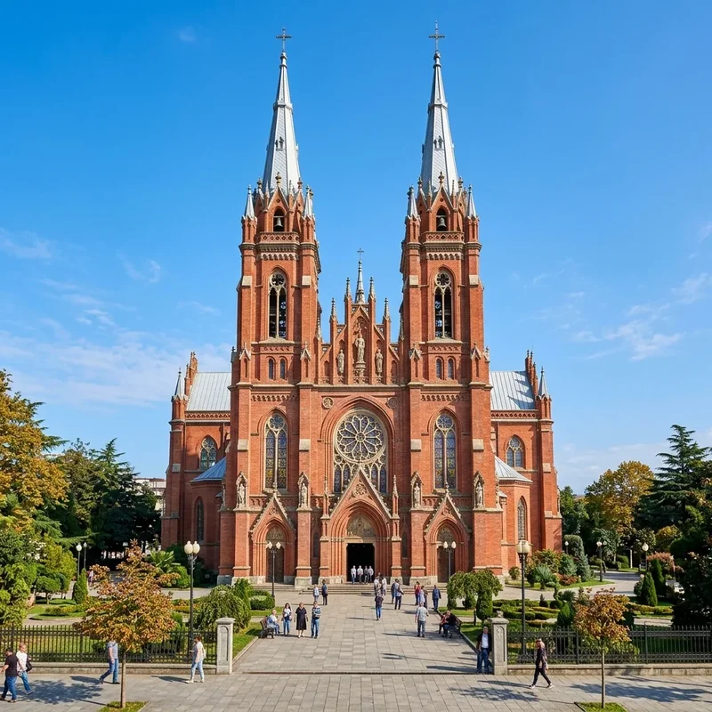
თავისი გოტიკური არქიტექტურით მიმზიდველი ეს ტაძარი თავდაპირველად კათოლიკურ ეკლესიად აშენდა, დღეს კი მართლმადიდებლურ საკათედრო ტაძრად გამოიყენება.
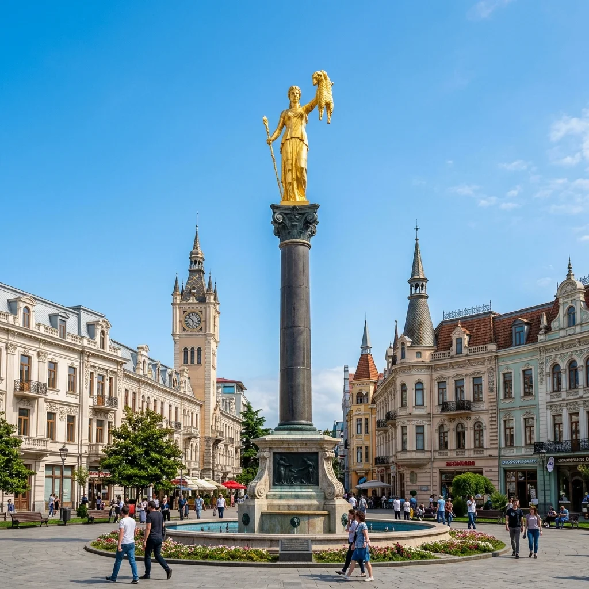
ევროპის მოედნის ცენტრში აღმართული ეს ქანდაკება ბერძნულ მითოლოგიაში ოქროს საწმისის ლეგენდას განასახიერებს.
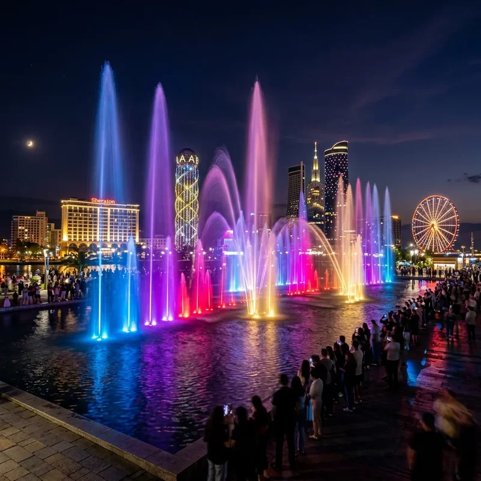
ბათუმის ბულვარში მდებარე ეს შადრევნები საღამოს მუსიკისა და განათების თანხლებით მომხიბვლელ ცეკვას სთავაზობენ დამთვალიერებელს.
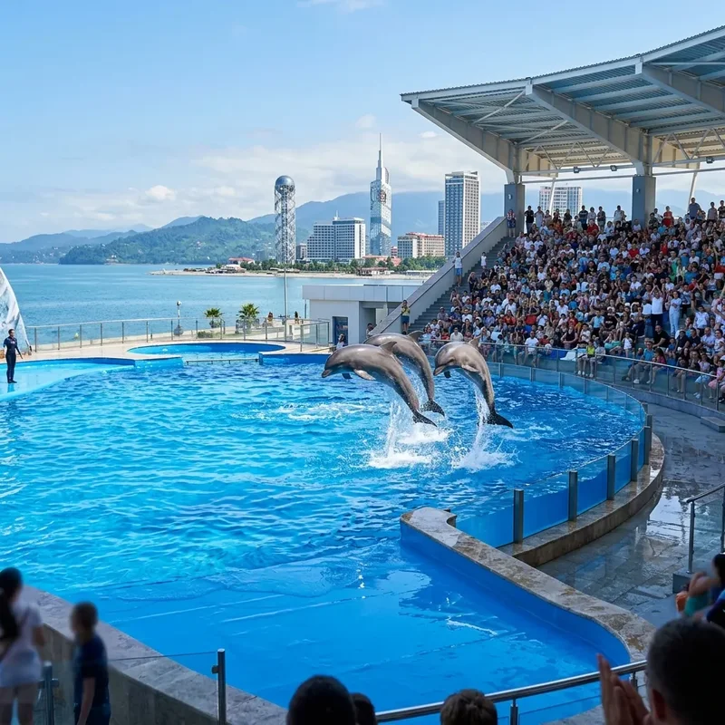
ეს ცენტრი გთავაზობთ მხიარულ წუთებს ბავშვებისთვისაც და მოზრდილებისთვისაც, სადაც შეგიძლიათ ნახოთ დელფინების შესანიშნავი შოუ.
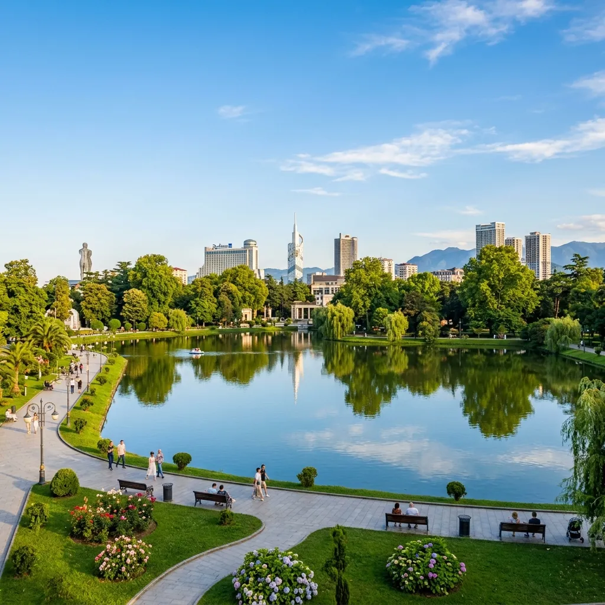
ქალაქის გულში მდებარე ეს მშვიდი პარკი იდეალურია ტბის პირას სასეირნოდ და ბუნებასთან სიახლოვისთვის.
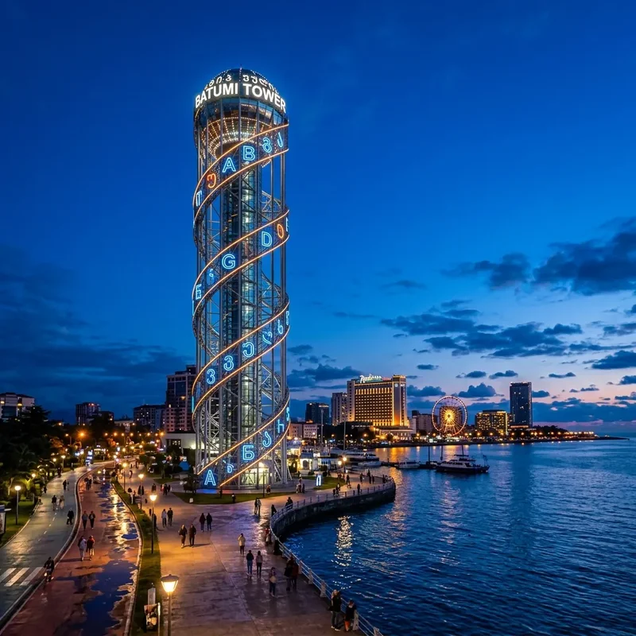
130 მეტრის სიმაღლის ეს კოშკი ბათუმის ერთ-ერთი სიმბოლოა თავისი უნიკალური ქართული ანბანის სიმბოლოებითა და დნმ-ის მსგავსი არქიტექტურით.
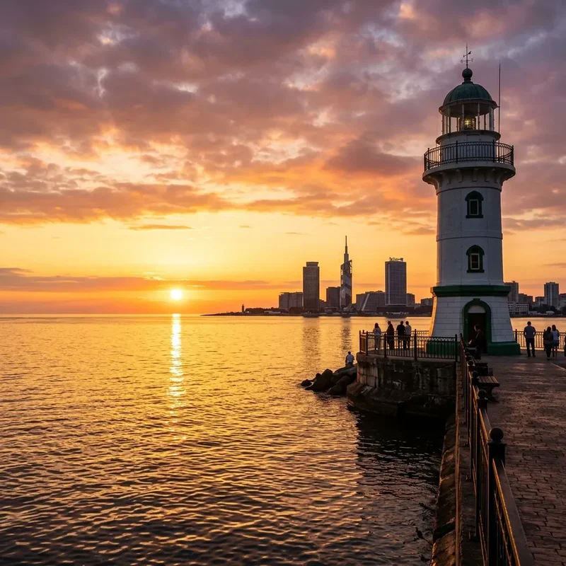
1882 წელს აშენებული ეს ისტორიული შუქურა პორტის ტერიტორიაზე მდებარეობს და ქალაქის საზღვაო წარსულის მოწმეა.

1881 წელს დაარსებული ბათუმის ბულვარი, რომელიც 7 კილომეტრზეა გადაჭიმული, ქალაქის სულს ასახავს თავისი სანაპირო ზოლით, ველობილიკებითა და მოცეკვავე შადრევნებით.
აღმოაჩინეთ ქართული სამზარეულოს უნიკალური გემოები. აჭარული ხაჭაპური, ხინკალი და მსოფლიოში ცნობილი ქართული ღვინოები.


თავისი ბრწყინვალე კაზინოებით, ექსკლუზიური პლაჟის კლუბებითა და თანამედროვე rooftop ბარებით, ბათუმი შავი ზღვის ლას-ვეგასად არის ცნობილი.